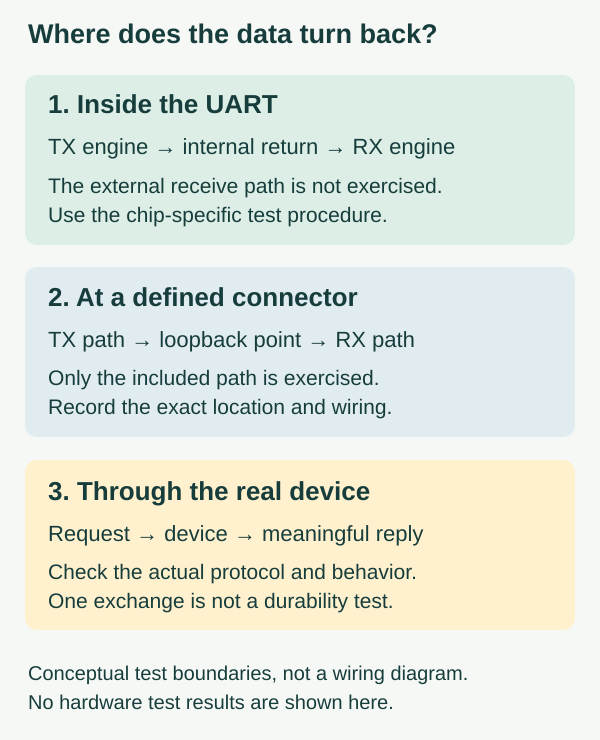

Your engineer sends you a screenshot saying “loopback passed.” The prototype still cannot get a reading from the instrument it is meant to connect to. Those results can both be true: a loopback test sends data along a path that returns to its sender, and that path may stop well before the cable or instrument.
For a team preparing a custom controller or a small batch of connected prototypes, the useful question is where the data turned around. A self-test inside the chip, a jumper at a connector and a reply from the real device establish different things. Ask for that boundary alongside the pass result.
The checks below are a proposed way to review an interface; they are not tests performed for this article.

An internal return path can leave the outside world untested
UART is the microcontroller hardware that sends and receives serial data. In an internal loopback mode, its transmitted stream is routed back to its own receiving path. The RP2040 datasheet describes enabling this using the LBE field of the UARTCR register.
A successful comparison is useful evidence about the configured internal path and the software exercising it. It does not establish that the intended receive pin, connector, cable and remote device all work together. Even the test configuration matters: register names and setup sequences from another chip are not portable instructions for your board.
A Renesas support discussion, reviewed on October 10, 2026, describes this distinction directly. A developer reported successful internal loopback but unreliable reception between two custom boards. The replies asked about configuration and receive errors; the author reported overflow events. The visible discussion does not document a completed repair. It is a concrete reason to investigate the external exchange separately, not proof that your fault has the same cause.
Move the test boundary deliberately
An external loopback can include more of the physical path, but only as far as the point where the signal returns. A connection at the board header leaves an outgoing cable untested. A suitable return connection at the far end of that cable includes it. Record the exact location with a photograph or marked connection drawing so another person knows what was exercised.
Have the engineer choose the connection for the actual electrical interface. Logic-level UART, RS-232 and RS-485 are different arrangements; a generic instruction to join two named pins is not enough. Disconnect the remote device where the chosen procedure requires it, and avoid creating a connection between competing outputs. This article is a test-planning guide, not a universal loopback-plug recipe.
The record should include the board revision, port, serial format, test pattern, byte counts, error counts and duration. A few returned characters are a useful first check, but they do not establish performance under the intended workload. A local transmitter and receiver may also share a timing error that another device will not tolerate. Where timing is in doubt, compare the signal against an independent measurement or a known-working peer.
Make sure “pass” describes the intended path
A recent Chinese engineering account illustrates why comparing two equal values is not always sufficient. In a September 10, 2026 post by 路科验证, a UART simulation reported matching transmitted and received bytes even though a configuration check failed. The author traced the apparent success to access to a configuration register instead of the intended transmit and receive registers. That was a chip-verification simulation, not a test of this MicroPython board, and its addresses should not be copied here.
At the application level, check for other users of the port as well. In Toradex's September 30, 2026 investigation, a Linux serial test encountered unexpected traffic associated with a login service on the same UART. The engineering account reports a board-configuration correction. This is a separate Linux example, not a claim that MicroPython runs that service.
Together, these cases suggest a useful review question: what evidence shows that these bytes came through the path you meant to test? Preserve unexpected output and failed setup checks. Do not reduce the handover to the final green line or hide an unexplained difference by clearing data until the test passes.
Finish with an operation the product actually needs
After the lower-level checks, restore normal communication mode, remove the test connection and connect the intended device. Use a documented, non-destructive query with a recognizable response. A returned copy of the request is not necessarily the instrument's answer; compare the received bytes with its protocol documentation.
Then exercise the conditions the user will encounter: a reply arriving late, the device restarting, and the cable being disconnected and restored. The prototype should distinguish a fresh reading from an old value and a failed exchange. These are proposed integration checks, not recorded outcomes.
The acceptance record can now say something specific: which internal check passed, which physical path was exercised and which real operation worked. If the last step fails, the earlier results still help narrow the investigation without overstating what is ready. Contact Anvol with the connection drawing, interface manual and raw exchange if you need help completing that integration.